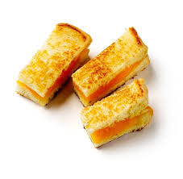

Home
Grilled Cheese

Description
Grilled cheese is a perfect lunch in winter..
Enjoy it with some tomato soup too!
Ingredients
- Bread
- Butter
- Brick of cheese
Steps
- Bring stove top to low-medium heat.
- Butter all slices of bread.
- Slice cheese evenly.
- Place sliced cheese onto non-buttered sides of bread.
- Make a sandwhich with buttered sides on the outside, place in pan.
- Cook for about 2 minutes each side or until brown and cheese is melted.
- Enjoy!